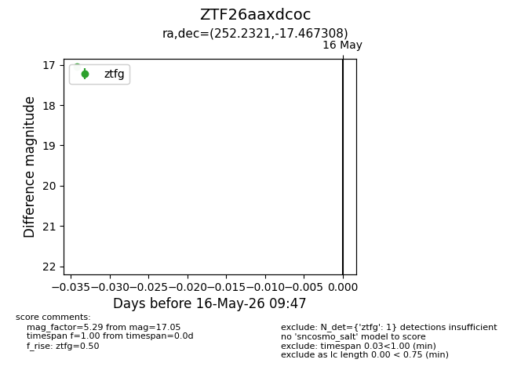
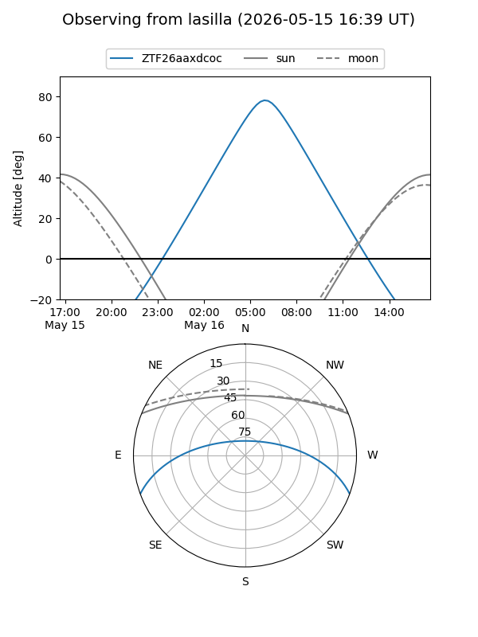
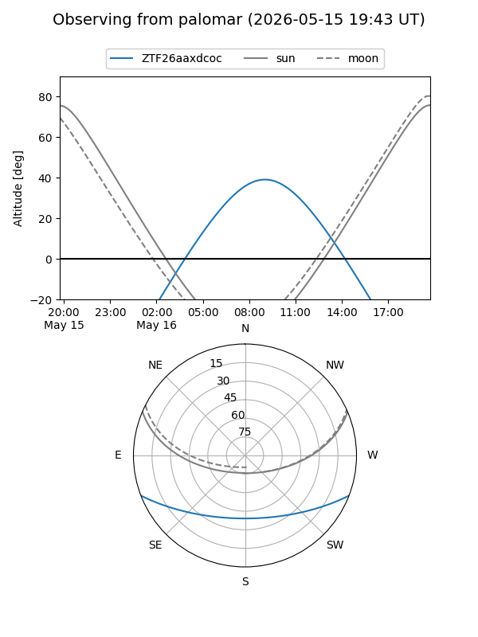

ZTF26aaxdcoc
Target ZTF26aaxdcoc at 2026-05-16 09:49
Aliases and brokers:
FINK: link
Lasair: link
ALeRCE: link
alt names
ZTF26aaxdcoc (ztf,fink_ztf)
Coordinates:
equatorial (ra, dec) = 252.2321,-17.46731
equatorial (HMS+DMS) = 16:48:55.69,-17:28:02.31
galactic (l, b) = (2.1616,+17.19539)
Flags:
Photometry:
last ztfg=17.05
1 ztfg detections
Lightcurve

Visibility


Additional plots